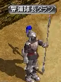
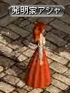
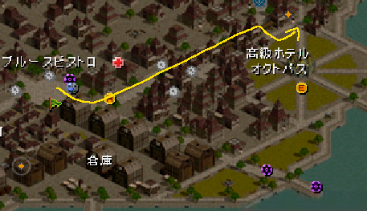
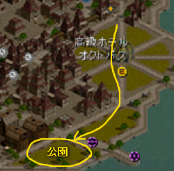
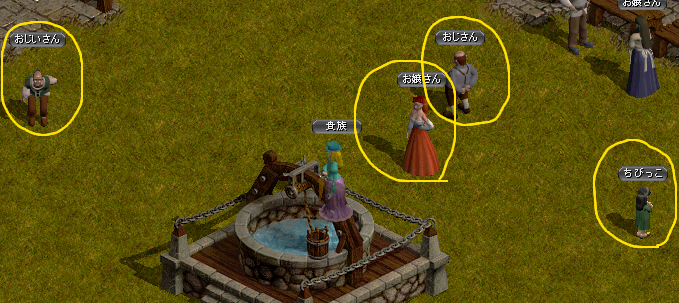
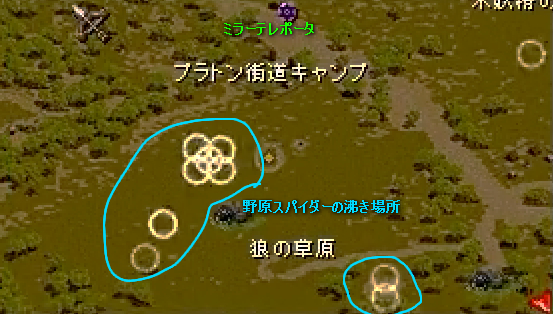
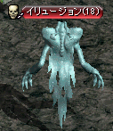
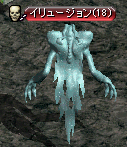

該当マップ（シュトラの左のマップ）に飛び、そこから左下に走ると早い。
風の羽を使わない人は、シュトラから左上に出て走りで。
タランはマップ左下、「地方警備隊詰め所」付近（１１５，２１３）にいる。

◆もらえるもの
帰還の魔石
（１５０，２１）
発明家アシャはシュトラのマップ右上、オクトパスの上の方（１５０，２１）にいる。

アシャの所に行く途中の道が建物でごちゃごちゃしており、分かりにくいので、道順の一例を下に示す。

公衆便所を作ってみたいので、町の人の意見を聞いて来てくれと頼まれる。
どうやらこの世界には公衆便所が存在していない模様。

ちびっこ、おじさん、お嬢さん、おじいさん の４人に話しかけてＵＰ。

（１５０，２１）
◆もらえるもの
古都テレポーター無料利用券１枚
シュトラテレポーター無料利用券１枚
該当マップ（中央プラトン街道／グレートフォレスト入口付近）に飛ぶとよい。
風の羽を使わない人は、古都冒険家協会に行き
ミラーテレポータ（古都冒険者協会のロビーにいる）
１１１４５
で、現地に飛べる。
風の羽を使った人はヤマイヌから、
ミラーテレポータの人は野原スパイダーから行くとよい。
◆ヤマイヌ
マップ右上方面にいる。
左右２箇所に分かれているが、左側の方が沸きが早い（３０秒沸き）。
右側は１２０か１３０秒沸きぐらい。
１回で集まらなかった場合は、左側で待っているとよいだろう。

◆野原スパイダー
マップ左下方面。
ミラーテレポータから飛んできた人は、こちらを先に行き、
その後「木妖精の庭園」の右下から坂を上ってヤマイヌに向かうとよい。

（１５０，２１）
◆もらえるもの
ＥＸＰ：２０，０００
（１７２，７９）
アリエルはシュトラで生まれ、２歳までシュトラにいたらしい。
◆もらえるもの
未熟なサンベリー

 
